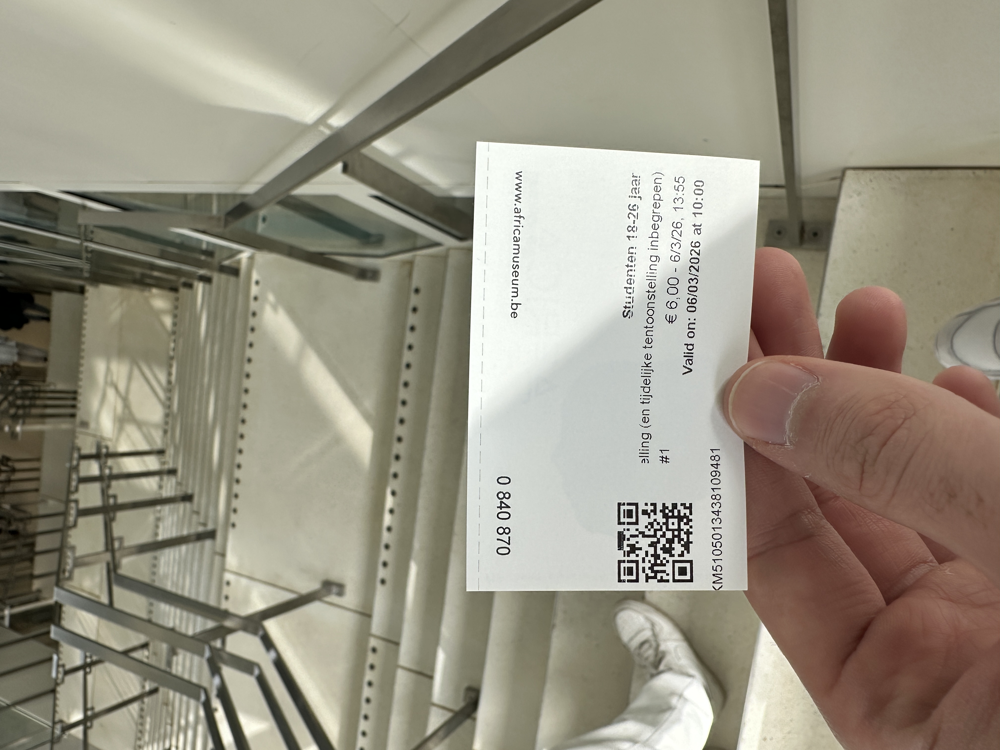

Reflections
During our visit to the Africa Museum in Tervuren, several things left a strong impression on us. One of the most memorable and shocking things we learned was about the 1897 World Fair organized by Leopold II. During this exhibition, Congolese people were brought to Belgium and placed in reconstructed villages so visitors could observe them. Today this is often described as a “human zoo.”
Learning about this part of history was very disturbing. It was difficult to imagine that people were treated like objects that others could simply come and watch. This clearly shows how colonial ideology at that time dehumanized African people and treated them as inferior. For us, this was one of the most emotional parts of the visit because it shows how racism and colonial thinking affected real human lives.
Another thing that stood out was how the museum itself has changed over time. In the past, the museum mainly showed colonial history from the perspective of Belgium and often presented colonization in a positive way. Today, the museum tries to show a more honest and critical view of the past. This is important because it allows visitors to understand the suffering that many Congolese people experienced during colonial rule.
The visit made us reflect on how history is sometimes presented differently depending on the perspective. Many of us did not learn much about this topic in school, so discovering these stories in the museum helped us understand the complexity of Belgium’s colonial past. It also made us realize that history is not only about events but also about how societies remember and interpret those events.
Personally, the visit made us feel a mix of emotions: sadness, surprise and reflection. It is uncomfortable to confront these difficult parts of history, but it is also necessary. Understanding what happened in the past can help us recognize discrimination and inequality in the present.
Overall, the visit taught us that remembering and discussing these historical events is very important. By learning about them, we can better understand the impact of colonialism and work towards a more respectful and equal society.
My Visit
Below is a photo of my ticket as proof of the visit:
